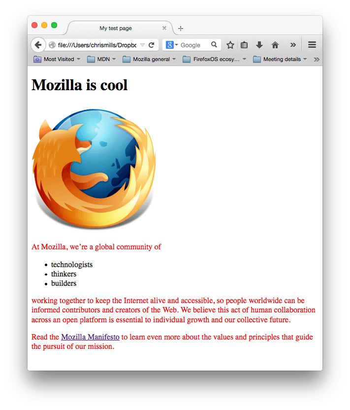

Introduction
CSS (Cascading Style Sheets) is the code that styles web content. CSS basics walks through what you need to get started. We'll answer questions like: How do I make text red? How do I make content display at a certain location in the (webpage) layout? How do I decorate my webpage with background images and colors?
What is CSS?
Like HTML, CSS is not a programming language. It's not a markup language either. CSS is a style sheet language. CSS is what you use to selectively style HTML elements. For example, this CSS selects paragraph text, setting the color to red:
p {
color: red;
}
Let's try it out! Using a text editor, paste the three lines of CSS (above) into a new file. Save the file as style.css in a directory named styles.
To make the code work, we still need to apply this CSS (above) to your HTML document. Otherwise, the styling won't change the appearance of the HTML. (If you haven't been following our project, pause here to read Dealing with files and HTML basics.)
-
Open your index.html file. Paste the following line in the head
(between the <head> and </head> tags):
<link href="styles/style.css" rel="stylesheet"> - Save index.html and load it in your browser. You should see something like this:
- If your paragraph text is red, congratulations! Your CSS is working. 
Anatomy of a CSS ruleset
Let's dissect the CSS code for red paragraph text to understand how it works:

The whole structure is called a ruleset. (The term ruleset is often referred to as just rule.) Note the names of the individual parts:
Selector
This is the HTML element name at the start of the ruleset. It defines the element(s) to be styled (in this example, elements). To style a different element, change the selector.
Declaration
This is a single rule like color: red;. It specifies which of the element's properties you want to style.
Properties
hese are ways in which you can style an HTML element. (In this example, color is a property of the
elements.) In CSS, you choose which properties you want to affect in the rule.
Property value
To the right of the property—after the colon—there is the property value. This chooses one out of many possible appearances for a given property. (For example, there are many color values in addition to red.)
Note the other important parts of the syntax:
- Apart from the selector, each ruleset must be wrapped in curly braces.({})
- Within each declaration, you must use a colon (:) to separate the property from its value or values.
- Within each ruleset, you must use a semicolon (;) to separate each declaration from the next one.
To modify multiple property values in one ruleset, write them separated by semicolons, like this:
p {
color: red;
width: 500px;
border: 1px solid black;
}
Selecting multiple elements
You can also select multiple elements and apply a single ruleset to all of them. Separate multiple selectors by commas. For example:
p, li, h1 {
color: red;
}
There are many different types of selectors as well.
Fonts and text
Now that we've explored some CSS fundamentals, let's improve the appearance of the example by adding more rules and information to the style.css file.
-
First, find the output from Google Fonts that you previously saved
from What will your website look like?. Add the <link>
element somewhere inside your index.html's head (anywhere between
the <head> and <head> tags). It looks something like
this:
This code links your page to a style sheet that loads the Open Sans font family with your webpage.<link href="https://fonts.googleapis.com/css?family=Open+Sans" rel="stylesheet" > - Next, delete the existing rule you have in your style.css file. It was a good test, but let's not continue with lots of red text.
-
Add the following lines (shown below), replacing the font-family
assignment with your font-family selection from What will your
website look like?. The property font-family refers to the font(s)
you want to use for text. This rule defines a global base font and
font size for the whole page. Since <html> is the parent
element of the whole page, all elements inside it inherit the same
font-size and font-family.
html { font-size: 10px; /* px means "pixels": the base font size is now 10 pixels high */ font-family: "Open Sans", sans-serif; /* this should be the rest of the output you got from Google fonts */ } -
Now let's set font sizes for elements that will have text inside
the HTML body (<h1>, <li>, and <p>). We'll also
center the heading. Finally, let's expand the second ruleset
(below) with settings for line height and letter spacing to make
body content more readable.
Adjust the px values as you like.Your work-in-progress should look similar to this:h1 { font-size: 60px; text-align: center; } p, li { font-size: 16px; line-height: 2; letter-spacing: 1px; }
CSS: all about boxes
Something you'll notice about writing CSS: a lot of it is about boxes. This includes setting size, color, and position. Most HTML elements on your page can be thought of as boxes sitting on top of other boxes.
CSS layout is mostly based on the box model. Each box taking up space on your page has properties like:
- padding, the space around the content. In the example below, it is the space around the paragraph text.
- border, the solid line that is just outside the padding.
- margin, the space around the outside of the border.

In this section we also use:
- width (of an element)
- background-color, the color behind an element's content and padding.
- color, the color of an element's content (usually text).
- text-shadow sets a drop shadow on the text inside an element.
- display sets the display mode of an element. (keep reading to learn more)
To continue, let's add more CSS. Keep adding these new rules at the bottom of style.css. Experiment with changing values to see what happens.
Changing the page color
html {
background-color: #00539F;
}
This rule sets a background color for the entire page. Change the color code to the color you chose in What will my website look like?.
Stying the body
body {
width: 600px;
margin: 0 auto;
background-color: #FF9500;
padding: 0 20px 20px 20px;
border: 5px solid black;
}
There are several declarations for the <body> element. Let's go through these line-by-line:
- width: 600px; This forces the body to always be 600 pixels wide.
- margin: 0 auto; When you set two values on a property like margin or padding, the first value affects the element's top and bottom side (setting it to 0 in this case); the second value affects the left and right side. (Here, auto is a special value that divides the available horizontal space evenly between left and right). You can also use one, two, three, or four values, as documented in Margin Syntax.
- background-color: #FF9500; This sets the element's background color. This project uses a reddish orange for the body background color, as opposed to dark blue for the <html> element. (Feel free to experiment.)
- padding: 0 20px 20px 20px; This sets four values for padding. The goal is to put some space around the content. In this example, there is no padding on the top of the body, and 20 pixels on the right, bottom and left. The values set top, right, bottom, left, in that order. As with margin, you can use one, two, three, or four values, as documented in Padding Syntax.
- border: 5px solid black; This sets values for the width, style and color of the border. In this case, it's a five-pixel- wide, solid black border, on all sides of the body.
Positioning and styling the main page title
h1 {
margin: 0;
padding: 20px 0;
color: #00539F;
text-shadow: 3px 3px 1px black;
}
You may have noticed there's a horrible gap at the top of the body. That happens because browsers apply default styling to the <h1> element (among others). That might seem like a bad idea, but the intent is to provide basic readability for unstyled pages. To eliminate the gap, we overwrite the browser's default styling with the setting margin: 0;
Next, we set the heading's top and bottom padding to 20 pixels.
Following that, we set the heading text to be the same color as the HTML background color.
Finally, text-shadow applies a shadow to the text content of the element. Its four values are:
- The first pixel value sets the horizontal offset of the shadow from the text: how far it moves across.
- The second pixel value sets the vertical offset of the shadow from the text: how far it moves down.
- The third pixel value sets the blur radius of the shadow. A larger value produces a more fuzzy-looking shadow.
- The fourth value sets the base color of the shadow.
Try experimenting with different values to see how it changes the appearance.
Centering the image
img {
display: block;
margin: 0 auto;
}
Next, we center the image to make it look better. We could use the margin: 0 auto trick again as we did for the body. But there are differences that require an additional setting to make the CSS work.
The <body> is a block element, meaning it takes up space on the page. The margin applied to a block element will be respected by other elements on the page. In contrast, images are inline elements, for the auto margin trick to work on this image, we must give it block-level behavior using display: block;.
Conclusion
If you followed all the instructions in this article, you should have a page that looks similar to this one:

Reference
- All the documentation in this page is taken from MDN